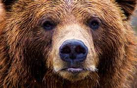
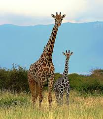
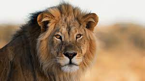
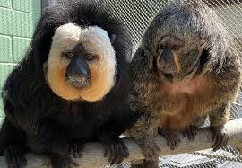
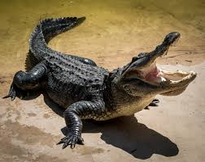

Bears have large bodies with shaggy hair. They have powerful, stocky legs that make them very fast runners, while their clawed paws are useful for hunting and digging.
They are adept at climbing and swimming, have a long snout and a short tail. Their large brains make them one of the more intelligent mammals.
The tallest land mammal, with a neck as long as 6 feet, the giraffe is also well known for the unique brown and white pattern on its coat (“pelage”) and its lengthy eyelashes and legs..
Habitat: Giraffes use both semi-arid savannah and savannah woodlands in Africa.
Lions have strong, compact bodies and powerful forelegs, teeth and jaws for pulling down and killing prey. Their coats are yellow-gold,
and adult males have shaggy manes that range in color from blond to reddish-brown to black. The length and color of a lion's mane is likely determined by age, genetics and hormones.
Habitat: Giraffes use both semi-arid savannah and savannah woodlands in Africa.
Most species are arboreal, using all four limbs to leap from tree to tree. They can sit upright and stand erect.
Most species run along branches rather than swinging arm over arm like the apes. Monkeys are highly social omnivores, organized in clans as large as several hundred individuals headed by an old male.
Alligators have a long, rounded snout that has upward facing nostrils at the end; this allows breathing to occur while the rest of the body is underwater.
The young have bright yellow stripes on the tail; adults have dark stripes on the tail. It's easy to distinguish an alligator from a crocodile by the teeth.
